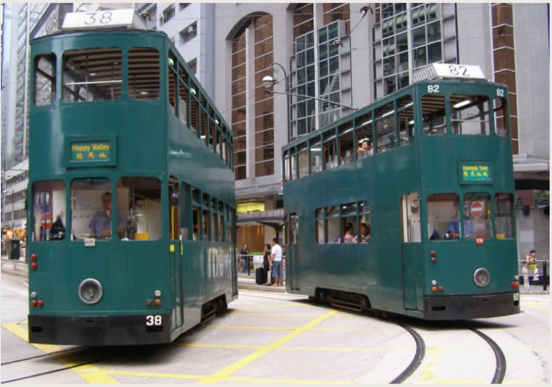

Ding Dings: The Historic Hong Kong Trams
Trams operate strictly on Hong Kong Island. These historic double-decker trams are slow compared to the MTR, but they cost next to nothing and offer an incredible, scenic view of the city streets.
How to ride a ding ding
- Hop on at the back.
- Go up the stairs to the upper deck and take a front-row seat for the best views.
- Pay a flat, budget-friendly fare (HK$3.30) with your Octopus card when you step off at the front exit, next to the driver.
Use the tram when you want sightseeing, and the MTR when you want speed.
